2Introduction
This manual is a reference designed to familiarize you with the Berkeley Nucleonics 575 series pulse generator and is arranged so that you can easily find the information you're looking for. Generally, each topic has its own section and no section assumes that you've read anything else in the manual.
Technical Support
For questions or comments about operating the 575, our technical staff can be reached via one of the following methods:
- Phone: (415) 453-9955
- Fax: (415) 453-9956
- Online: www.berkeleynucleonics.com
Warranty
In addition to a 30-day money back guarantee, the 575 has a two-year limited warranty from the date of delivery. This warranty covers defects in materials and workmanship. Berkeley Nucleonics will repair or replace any defective unit. Contact us for information on obtaining warranty service.
Package Contents
The box you receive should contain the following:
- 575 Pulse Generator
- AC Power Cord
- Disc that includes: Operating Manual, Software Drivers, Communication Software
Contact Berkeley Nucleonics (415) 453-9955 if any parts are missing.
3Safety Issues
Normal use of test equipment presents a certain amount of danger from electrical shock because testing must be performed where exposed voltage is present.
Your normal work habits should include all accepted practices that will prevent contact with exposed high voltage, and steer current away from your heart in case of accidental contact with a high voltage. You will significantly reduce the risk factor if you know and observe the following safety precautions:
- If possible, familiarize yourself with the equipment being tested and the location of its high-voltage points. However, remember that high voltage may appear at unexpected points in defective equipment.
- Do not expose high voltage needlessly. Remove housing and covers only when necessary. Turn off equipment while making test connections in high-voltage circuits. Discharge high-voltage capacitors after shutting down power.
- When testing AC powered equipment, remember that AC line voltage is usually present on power input circuits, such as the on-off switch, fuses, power transformer, etc.
- Use an insulated floor material or a large, insulated floor mat to stand on, and an insulated work surface on which to place equipment. Make certain such surfaces are not damp or wet.
- Use the time-proven "one hand in the pocket" technique while handling an instrument probe. Be particularly careful to avoid contact with metal objects that could provide a good ground return path.
- Never work alone. Someone should always be nearby to render aid if necessary. Training in CPR first aid is highly recommended.
4Front Panel Overview
575 Front Panel
Display Layout and Indicators
A 4 line x 20 character vacuum fluorescent display module displays parameters and status information. The status information is located in the upper-left corner of the display, between the two brackets. There are four enunciators:
- Vertical arrow – Indicates there are additional pages to the current menu.
- Alternating hollow and solid circle – Indicates the unit is actively generating pulses, or armed and waiting for an external trigger.
- Musical note – Indicates the function key has been pressed.
- Question mark – In external oscillator operation, indicates the internal PLL is not yet locked with the external clock signal.
The upper-right side of the display contains the title of the currently displayed menu. The rest of the display is used for system parameters. The display brightness may be adjusted, allowing the instrument to be used under various lighting conditions.
Description of Front-Panel Area
Keypads. Three keypad areas provide fast access to various menus and easy editing of system parameters.
- Channel Keypad – Provides one touch access to the menus for setting up the channel parameters. Pressing the appropriate letter will display the parameters for the corresponding channel. Example: Pressing the A key will access the Channel A menus.
- Arrow Keypad – The up (UP) and down (DOWN) arrow keys are used to increment/decrement the current parameter (indicated by the blinking cursor). The position of the cursor controls the step size for each increment. The right (RIGHT) and left (LEFT) arrow keys move the cursor to different positions within the current parameter. The NEXT key selects the next parameter in the currently displayed menu.
- Numeric Keypad – Allows numbers and alphanumeric values to be entered. When entering alphanumeric values, pressing a key will display the first letter shown on the key. The yellow FUNC key allows the keys to select the yellow functions.
Repeated key presses will toggle through all the letters, both upper and lower case, shown on the keycap. To enter two letters which appear on the same keycap, select the first character, then use the right arrow to shift to the next position and enter the next letter. When data entry is complete the ENTER key must be pressed.
Rotary Adjustment Knob. As an alternative to the Arrow Keypad, the Rotary Adjustment Knob may be used to adjust the current parameter. The step size is controlled by the position of the cursor; however turning the knob faster will increase the step size. Pushing the knob will perform functions similar to the NEXT key and switch to the next parameter in the currently displayed menu.
Second Level Menus (Function Key). The second level menus (indicated in yellow above certain keys) are accessed through the use of the yellow function (FUNC) key. Pressing the FUNC key once and then pressing the desired menu key will display the specified second level menu. Pressing the FUNC key twice in succession will put the unit into "Function Lock" mode, where the second level menus can be accessed without repeatedly pressing the FUNC key. Pressing the FUNC key a third time will exit "Function Lock" mode.
5Pulse Concepts and Pulse Generator Operations
Counter Architecture Overview
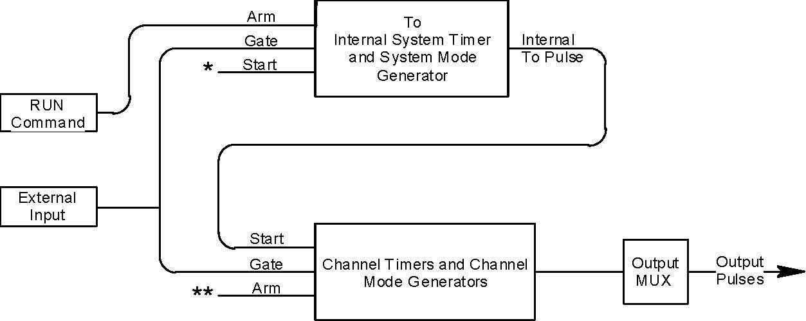
*Start source is: RUN/STOP key in Internal Modes; External input in External Trigger modes; *TRG command via Serial/GPIB access.
**Channels are armed by the RUN button. In single shot and burst modes channels may be rearmed by pressing the RUN button.
System Timer Functions
The System Timer functions as a non-retriggerable, multi-vibrator pulse generator. This means that once started, depending on the mode, the timer will produce pulses continuously. Before pulses can be generated, the timer must be armed and then receive a start pulse. Arming the counter is done by pressing the RUN/STOP key. With external trigger disabled, the RUN/STOP key also generates the start command for the counter. With external trigger enabled, the external trigger provides the start pulse. In either case, once started, the counter operation is determined by the System Mode Generator. Standard modes include:
- Continuous – Once started T0 pulses are generated continuously.
- Single Shot – One T0 pulse is generated for each start command.
- Burst – "n" T0 pulses are generated for each start command.
- Duty Cycle – Once started T0 pulses cycle on and off continuously.
The T0 pulses are distributed to all of the start inputs of the Channel Timers and Mode Generators.
Channel Timer Functions
The Channel Timer functions as a non-retriggerable, delayed, one shot pulse generator. This means that the timer will only generate one delayed pulse for every start pulse received. Once the channel timer has started counting, additional start pulses will be ignored until the pulse has been completed (non-retriggerable). The start pulse for each channel is provided by the internal T0 pulse generated by the Internal System Timer. Whether or not a pulse is generated for each T0 pulse is determined by the Channel Mode Generator. Standard modes include:
- Normal – A pulse is generated for each T0 pulse.
- Single Shot – One pulse is generated at the first T0 pulse, after which output is inhibited.
- Burst – A pulse is generated for each T0 pulse, 'n' times, after which output is inhibited.
- Duty Cycle – 'n' pulses are generated for each T0 pulse after which the output is inhibited for 'm' times. The cycle is then repeated.
Different modes may be selected for each output, allowing a wide variety of output combinations. Each output may also be independently disabled or gated (using the external gate input).
Digital Output Multiplexer
The outputs of the Channel Timers are routed to a set of multiplexers. This allows routing of any or all Channel Timers to any or all of the unit outputs. In the normal mode of operation, the output of the Tn Channel Timer is routed to the Tn output connector. As an example, if a double pulse is required on Channel A output, one can multiplex the Channel A timer with the Channel B timer adjusting each timer to provide the necessary pulses.
Dependent & Independent Timing Events
The 575 allows the user to control the relationship between the Channel Timers by setting the sync source for each timer. Independent events are all timed relative to the internal T0 start pulse. Dependent events may be linked together by setting the sync source to the controlling event. This allows the instrument to match the timed events and adjustments can be made in one event without detuning the timing between it and a dependent event.
Navigating the 575 Front Panel
Selecting Menus
Parameters are grouped in menus, selectable using menu keys. To select the output channel parameters press the letter key corresponding to the desired channel. To select second level menus press the FUNC key and then the key corresponding to the desired function. To select advanced channel menus press the FUNC key followed by the desired channel key. Menus may include a number of different pages with each page containing up to four parameters. The status block in the upper-left corner of the display shows a vertical arrow if the current menu contains additional pages. To select the next page, press the channel button again or select the same second level menu by pressing the FUNC key and the channel/menu key again.
Selecting Menu Items
Within a menu, the blinking cursor indicates the current menu item for editing. The NEXT key or pressing the adjustment knob will select a different menu item.
Numeric Input Mode
When the current item is numeric, the system enters the Numeric Input Mode. In this mode data may be edited in one of three ways. Using the arrow keypad, the left (LEFT) and right (RIGHT) arrow keys are used to select a digit to edit. The selected digit blinks to identify itself as the active digit. The UP and DOWN arrow keys are then used to increment or decrement this digit. Alternately, after using the LEFT and RIGHT arrow keys to select an active digit, the adjustment knob may be used to increment and decrement this digit. The adjustment knob features speed dependent resolution. Slow rotation will increment or decrement the active digit by one. As you increase the speed of rotation, the parameter will be 10 to 1000 times faster depending on the speed.
An additional entry mode is using the numeric keypad. Enter the number, including decimal point using the numeric keypad. Complete the number using the ENTER key. To clear number entry and/or start over press the clear key (CLR). Pressing the CLR key a second time will exit the numeric keypad mode and restore the original number.
The last entry mode is a modified form of scientific notation. The FUNC button acts as 10- in this case. Type in the value followed by FUNC then the number button that represents the power desired. For example 64us is entered as 6, 4, FUNC, and then 6.
Entering Non-Numeric Parameters
When the current item is non-numeric, the UP and DOWN arrow keys are used to select among different options for the parameter. The adjustment knob may also be used to change the selection. If the item is an on-off toggle, the UP arrow (CW adjustment knob) enables the item and the DOWN arrow (CCW adjustment knob) disables the item.
Alphanumeric Input Mode
When the current item is alphanumeric, the system enters the Alphanumeric Input Mode. In this mode, data is entered using the alphanumeric keypad. Pressing a key will display the first letter shown on the keypad. Repeated key presses will toggle through all the letters, both upper and lower case, shown on the key cap. To enter two letters which appear on the same key cap, select the first character, then use the right arrow to shift to the next position and enter the next letter. The Left and Right arrow keys may be used to position the cursor to edit any character. When data entry is complete, the ENTER key must be pressed. The keys contain the following characters:
| Key | Characters |
|---|---|
| 1 | 1 2 3 4 5 6 7 8 9 0 |
| 2 | A B C a b c 2 |
| 3 | D E F d e f 3 |
| 4 | G H I g h i 4 |
| 5 | J K L j k l 5 |
| 6 | M N O m n o 6 |
| 7 | P Q R S p q r s 7 |
| 8 | T U V t u v 8 |
| 9 | W X Y Z w x y z 9 |
| 0 | 0 1 2 3 4 5 6 7 8 9 |
| . | . , # $ % & ? • -- + * / space |
Enabling System Output
The RUN/STOP key is used to arm the system. With external trigger disabled, the key will arm and start pulse output. With external trigger enabled, the key will arm the pulse generator. Pulse output then starts after the first valid trigger input. Pressing the RUN/STOP key a second time disables the pulse generator.
Enable/Disable Channel Output
At the top of each channel menu page is a parameter to enable or disable the output of the channel. Each channel may be individually enabled or disabled. An illuminated channel key indicates that the channel is enabled.
Rearming the Channel Timers
In the channel single shot mode and burst mode, the Channel Timers may be rearmed after completing the initial output by pressing the FUNC key followed by the RUN/STOP key. If there are channels currently running in normal mode, single shot and burst channels can be re-armed without affecting the timing on normal mode channels by pressing function RUN/STOP.
Setting Pulse Timing Parameters
Pulses are defined by a delay, from their sync or start pulse to the active edge, and a width.
- Wid: Sets the width of the active portion of the pulse.
- Dly: Sets the delay from the sync source to the start of the pulse.
Setting Pulse Output Parameters
There are three basic types of outputs available on the 575: (a) TTL/CMOS compatible outputs; (b) adjustable amplitude outputs; (c) optical outputs.
- Out: Selects between TTL/CMOS mode and Adjustable mode when both are available on a single output.
- Pol: Sets the voltage polarity of the pulse, active high or active low. Note: All outputs are positive; negative voltages are not supported.
- Ampl: In adjustable mode, it sets the unloaded output voltage. The actual output voltage will depend on the load impedance. For example: If the load is 50 ohms, the output will be 50% of the stated voltage.
Using the Output Multiplexer
Each output channel includes a multiplexer which allows routing any or all of the timer outputs to the physical output. This allows double pulses and other complex pulse trains to be generated. Only timing parameters are multiplexed together, not amplitudes.
-HGFEDCBA- Mux: -00000101-
The multiplexer is represented by an "n" bit binary number as shown above. "n" is the number of channels. Each bit represents a channel timer, which is enabled by setting the bit to one. In the above example, timers A and C are combined on the current output.
Setting System Internal Rate Parameters
The internal T0 period controls the fundamental output frequency of the system. Each channel may operate at submultiples of the fundamental frequency using their duty cycle mode.
- Source: Sets the reference source for the internal T0 Period.
- Per: Sets the internal T0 Period.
To set the system Internal Rate, press the yellow FUNC key, then press the RATE key, and then use the dial or number pad to specify the T0 Period.
6575 Menu Structure
System Mode Menus (FUNC + MODE key)
The MODE menu sets the T0 system timer mode. The menu will show the extra set parameters (Burst, On & Off) only when they are appropriate. Available modes: Continuous, Single Shot, Burst (adds #/Burst), Duty Cycle (adds #/On and #/Off).
- Mode: Selects the T0 mode: Continuous, Single Shot, Burst or Duty Cycle mode.
- Burst: Sets the number of pulses to be generated when in Burst mode.
- On: Sets the number of pulses to be generated during each on cycle.
- Off: Sets the number of pulses to skip during each off cycle when in the Duty Cycle mode.
Channel Menus (A, B, C, D, E, F, G, or H key)
Timing Menu: Channel Enable, Sync Source, Pulse Width, Delay.
Output Configuration Menu: Channel Enable; Output Type (TTL/CMOS, Adjustable, Optical, High Z, Low Z); Polarity; Output Level (for adjustable/Hi-Z/Lo-Z types).
Mode Menu: Channel Enable; Mode (Normal, Single Shot, Burst with #/Burst Pulses, Duty Cycle with #/On Pulses and #/Off Pulses).
Wait Menu: Channel Enable; #/Wait Pulses.
Enabling Channel Output
At the top of each of the channel menu pages is a parameter to enable or disable the channel. Each channel may be individually controlled. When enabled, the channel key will illuminate.
Setting the Channel Timing Parameters
To define a pulse requires two parameters: the delay to the active edge and the width of the pulse.
- Wid: Sets the channel pulse width.
- Dly: Sets the channel delay until the active edge.
Setting Pulse Configuration Output Type
The 575 supports two types of outputs: a high speed TTL/CMOS compatible output and, for applications which require different voltage levels or higher current, an adjustable voltage output. The pulses can also be defined to be active high or active low.
- Out: Selects the output mode; TTL/CMOS, Adjustable, Optical, High Impedance (Hi Z), or Low Impedance (Lo Z).
- Pol: Sets the pulse polarity, active high or active low.
- Ampl: Sets the output voltage level when in the Adjustable mode.
Setting Channel Mode of Operation
Each channel may be set independently to operate in one of four modes: normal, single shot, burst, or duty cycle (within the CHANNEL menus):
- Mode: Selects the mode for the current channel. Additional parameters are provided for the burst mode and the duty cycle mode.
- Brst: Sets the number of pulses in the burst mode to generate before inhibiting output.
- On: Sets the number of pulses to generate before inhibiting output in Duty Cycle Mode.
- Off: Sets the number of pulses to inhibit before repeating the On Cycle in Duty Cycle Mode.
Delaying the Start of Channel Output
Within any channel mode, the output of the channel can be delayed using the wait parameter (within the CHANNEL menu):
- Wait: Sets the number of T0 pulses to wait until enabling the channel output.
Advanced Channel Menus (FUNC + A, B, C, D, E, F, G or H key)
Multiplexer Menu
Shows the multiplexed channels as an -HGFE DCBA- bit field. To define which channels are fed into the channel multiplexer, the corresponding bit for the desired channel to add should be set to 1. All omitted channels should have the corresponding bit set to 0.
- Mux: Enable/disable bit field.
Channel Gate Menu
Provides per-channel gate control: Ch Gate Mode (Gate Menu, Pulse Inhibit, or Output Inhibit) and Logic Level.
Setting the Sync Source
Although each channel receives its start pulse from the internal T0 pulse, the start pulse can be assigned such that the delay entered is relative to the T0 pulse or any other channel pulse. This allows dependent events to link. The unit will not allow a circular chain of sync sources that would result in a channel triggering itself. The delay entered is relative to the selected sync source.
- Sync Source: Selects the channel sync source.
Setting Channel Gate Control
When the global gate is set (Chan Menu), the channel can then use the gate input with independent behavior from other channels.
- Gate: Enables the GATE input for the channel by setting the method of output control used with the gating function.
- Logic: Sets the logic level used with the gating function, either active high or active low.
"Pulse Inhibit" method: The gate prevents the channel from being triggered by the channel's trigger source pulse. If a pulse has already started when the gate disables the channel, the pulse will continue normal output but will not restart on the next trigger pulse. "Output Inhibit" method: The gate leaves the base triggering alone and enables/disables the output directly.
Clocks/Rate Menus (FUNC + RATE key)
Internal Reference Menu
The Source parameter selects the clock source (System Osc, or external 10/20/25/40/50/80/100 MHz), each with an associated T0 Period.
- Source: Selects the internal or external clock source from which the unit will operate.
- To: Sets the T0 period which determines the fundamental output frequency of the unit.
Reference Out Menu
The Ref Out parameter selects the output reference frequency: T0 Pulse, 100 MHz, 50 MHz, 33.33 MHz, 25 MHz, 20 MHz, 16.67 MHz, 14.2857 MHz, 12.5 MHz, 11.11 MHz, or 10 MHz. Ref Out selects the frequency of the output reference for synchronizing with external system components.
Trigger Menus (TRIG key)
Modes: Disabled, or Triggered (adds Threshold Level and Trigger Edge). Enable the use of the TRIG input by the system timer as a trigger source.
- Mode: Selects between disabling/enabling the trigger mode.
- Level: Sets the trigger threshold.
- Edge: Selects between rising and falling edges as the trigger source when a trigger mode is enabled.
Gate Menus (GATE key)
Standard Gate Menu modes: Disabled, Pulse Inhibit (adds Threshold Level), Output Inhibit (adds Threshold Level and Logic Level), or (Chan Menu) where the Gate Mode is controlled on a per-channel basis from the Advanced Channel Gate Menu. Enables the use of the GATE input as a trigger inhibit or output control for all channels simultaneously, or on a per channel basis.
- Mode: Selects between disabling the GATE inputs and method of output control.
- Level: Sets the gating threshold.
- Logic: Sets the active logic level.
System Configuration Menus (FUNC + SYSTEM key)
Communication Interface Menu
Interface options: RS232 (adds Baud Rate, Echo), USB, GPIB* (adds Address), Ethernet*. *Instrument must be equipped with the Extended Communications Option (visit www.berkeleynucleonics.com for details). The 575 comes with a standard RS232 serial port and USB port. The unit will not respond to computer commands unless these ports are properly configured.
- Interface: RS232, USB, GPIB (optional), Ethernet (optional).
- Baud Rate: Selects the baud rate for the selected interface.
- Echo: Selects whether to echo characters back to the host computer or not.
- Address: Sets the GPIB address.
User Options Menu 1 (Key Rate, Key Volume, Knob Volume)
The rate at which a key will repeat itself when held down may be set. This can be used to provide a controlled rate at which a parameter is incremented. In addition, the volume of the beep can be controlled for both the keypad and the adjustable knob.
- Key Rate: Sets the rate at which the keys will repeat when held down.
- Key Vol: Sets the beep volume for the keypad.
- Knob Vol: Sets the beep volume for the Rotary Knob.
User Options Menu 2 (Auto Start Mode, Decimal Mark, LCD Brightness)
- Auto Start: The unit may be configured to automatically start generating pulses after power up.
- Mark: Selects the format of the decimal mark, "." or ",".
- LCD: Adjusts display brightness.
Store Menu (FUNC + STORE key)
Parameters: Configuration #, Name, Help Line. Use the following procedure to store a complete system configuration: set all parameters to the desired value; select a configuration number; label the configuration as desired; from the Store menu, press the store button sequence (FUNC + STORE).
Recall Menu (FUNC + RECALL key)
Parameters: Configuration #, Name, Help Line. Use the following procedure to recall a stored or default system configuration: enter the Recall Menu (FUNC + RECALL); select a configuration number; from the Recall Menu, press the recall key sequence (function + recall). Configuration 0 is the factory default setting.
Counter Menu (FUNC + AUX1 key)
Parameters: Counter Enable, T Counts, G Counts* (enabled when the Trigger Mode is set to Dual Trigger operation; instrument must be equipped with the Dual Trigger Option), Help Line. The Counter function counts the number of T0 pulses output by the system clock. When the unit is operated in system single shot mode, the T0 count reflects the number of incoming trigger pulses.
Information Menus (FUNC + 0 key)
Information Menu A: Model Number, Serial Number, Firmware Ver., FPGA Ver. Information Menu B: FW ID #, GA ID #, Module IDs, Instr. Options. The Information Menus provide all of the pertinent version numbers and serial numbers for the unit. This information should be readily available when contacting customer service for troubleshooting help.
7Operating the 575
Quick Start - Normal Internal Rate Generator Operation
The 575 has a powerful set of functions providing a number of modes of operation for the internal or "System" rate generator (T0). Most of these functions can be ignored if a simple continuous stream of pulses is required. Starting from the default settings, which can be restored by recalling configuration 0, the following parameters need to be set:
- Pulse Width, Delay: Enter the Channel menus by pressing the letter key. Enter the required pulse width and delay. Repeat for each output channel.
- T0 Period: Enter the Rate menu by pressing the FUNC key and then the RATE key. Set the desired pulse period. Note that in general, the pulse delay plus the pulse width, plus a 75ns hardware reset constant, for any channel must be less than the T0 period.
- Start: Press the RUN/STOP key to start generating pulses.
- Stop: Press the RUN/STOP key a second time to stop generating pulses.
Quick Start - Normal External Trigger Operation
To generate a single pulse for every external trigger event, based on the default configuration 0, the following parameters need to be set:
- System Mode: Enter the System Mode menu by pressing the FUNC key and then the MODE key. Select Single Shot mode.
- Trig: Enter the Trigger menu by pressing the TRIG key. Select Triggered.
- Level: Press the NEXT key until the Level parameter is highlighted. Set the trigger threshold voltage to approximately 50% of the trigger signal amplitude.
- Edge: Press the NEXT key until the Edge parameter is highlighted. Set the instrument to trigger off the rising edge or falling edge as desired.
- Pulse Width, Delay: Enter the Channel menus by pressing the letter key. Enter the required pulse width and delay. Repeat for each output channel.
- Start: Press the RUN/STOP key to start/arm the instrument. The 575 will now generate a pulse for every valid trigger.
- Stop: Press the RUN/STOP key a second time to stop/disarm the instrument.
System Timer Overview
For internal operation, the 575 contains a timer and mode generator which generates an internal T0 clock that is used to trigger all the channel timers. System modes are controlled via the MODE menu.
To Use Continuous Mode
The RUN/STOP button starts and stops a continuous pulse stream at the rate specified by the Rate menu. This corresponds to the normal output mode for most pulse generators. To generate a continuous stream of pulses: within the system Mode menu select Continuous; within the Rate menu select the system oscillator or external clock source and set the desired period. Pressing the RUN/STOP key will now generate a stream of T0 pulses at a rate specified by the period parameter.
To Use Single Shot Mode
To generate a single pulse with every press of the RUN/STOP key: within the system Mode menu select Single Shot. Pressing the RUN/STOP key will now generate a single pulse.
To Use System Burst Mode Function
The RUN/STOP button generates a stream of "n" T0 pulses, where "n" is specified by the Burst parameter. The rate is specified in the Rate menu. Pressing the RUN/STOP button while the burst is in process will stop the output. After the burst has been completed, pressing the RUN/STOP button will generate another burst. To generate a burst of pulses: within the system Mode menu select Burst mode and set the number of pulses to produce in the burst.
To Use System Duty Cycle Function
The RUN/STOP button starts a continuous pulse stream which oscillates on for "n" pulses and off for "m" pulses, where "n" and "m" are specified by the On and Off parameters. The rate is specified in the Rate Menu. To generate this stream: within the system Mode menu select Duty Cycle, set On (pulses during the on cycle) and Off (pulses to skip during the off cycle); within the Rate menu select the source and set the desired Period.
Channel Timer Overview
The output of each channel is controlled by two timers to generate the delay timing and the pulse width. All channels are simultaneously triggered, depending on the system mode, by the internal T0 pulse, the external trigger, or a trigger provided by the operating software. A given channel may or may not generate a pulse depending on its own channel mode as described below. When one channel is generating a continuous stream of pulses, a user can trigger a single shot or burst of pulses on another channel without interrupting the continuous stream by pressing the FUNC and the RUN/STOP key.
To Use Channel Normal Mode Function
The Normal mode generates a continuous stream of pulses at a rate determined by the system timer. Within the Channel menus: Enable channel output, set the desired delay (Dly) and pulse width (Wid), and select Normal mode. Pressing the RUN/STOP key will now generate a continuous stream of pulses.
To Use Channel Single Shot Function
The Single Shot mode generates a single pulse every time the RUN/STOP key is pressed. If the unit is in the active state (i.e. channels set to Normal mode are producing pulses), pressing the FUNC key and RUN/STOP key will reset the Single Shot counters and generate one pulse in sync with the other channels running in Normal mode. Within the Channel menus: Enable channel output, set the desired Delay and Width, and select Single Shot mode.
To Use Channel Burst Mode Function
The Burst mode generates a burst of pulses every time the RUN/STOP key is pressed. If the unit is in the active state, pressing the FUNC - RUN/STOP key sequence will reset the Burst counters and generate a new set of pulses in sync with the other channels running in Normal mode. FUNC - RUN/STOP will not affect T0 pulse status. Within the Channel menus: Enable channel output, set the Delay and Width, select Burst mode, and set #/Burst (the number of pulses to produce in the burst).
To Use the Channel Duty Cycle Function
To generate a stream of pulses which oscillates on for 'n' pulses and off for 'm' pulses, within the Channel menus: Enable channel output, set the Delay and Width, select Duty Cycle mode, set the On Cycle (pulses to produce) and the Off Cycle (pulses to skip).
To Use the Channel Gating Function
Each channel may use the external input to gate or control its output. The gate controls the triggering of the channel. To use the gate, within the Channel menu: the Gate Menu Mode must be set to Channel Menu; select Channel Gate as "Pulse Inh" or "Output Inh"; set Logic to active high or active low. In the "Pulse inhibit" method, the gate prevents the channel from being triggered by the channel's trigger source pulse. If a pulse has already started when the gate disables the channel, the pulse will continue normal output but will not restart on the next pulse. In the "Output inhibit" method, the gate leaves the base triggering alone and enables/disables the output directly. Output pulses will immediately cease when the gate signal is removed.
External Input Overview
The external inputs may be used to trigger the unit or to gate the system or channel timers. When using a trigger input, the external input acts as a system start pulse. Depending on the system mode, the result of a trigger input can be either a single pulse, a burst of pulses or the start of a stream of pulses.
To Generate a Pulse on Every Trigger Input
Within the Mode menu select Single Shot mode. Within the Trigger menu select Triggered mode, set the trigger threshold Level, and select the trigger Edge (rising or falling). Pressing the RUN/STOP key will arm the unit. Once armed, it will generate a T0 pulse for every external trigger received. Pressing the RUN/STOP key will disarm the unit. This mode corresponds to the normal external trigger mode found on most other pulse generators.
To Generate a Burst of Pulses on Every Trigger Input
Within the Mode menu select Burst mode and set the number of pulses per burst. Within the Rate menu select the source and set the period between pulses. Within the Trigger menu select Triggered mode, set the Level, and select the Edge. Pressing the RUN/STOP key will arm the unit. Once armed, it will generate a set of pulses for every external trigger received. The unit is reset at the end of a burst and will generate another set of pulses upon receiving a new trigger. Triggers that occur in the middle of a burst are ignored. Pressing the RUN/STOP key will disarm the unit.
To Start a Continuous Stream of Pulses Using the External Trigger
Within the Mode menu select Continuous mode. Within the Rate menu select the source and set the period. Within the Trigger menu select the Trigger mode, set the Level, and select the Edge. Pressing the RUN/STOP key will arm the unit. Once armed, it will begin generating pulses after an external trigger is received. Triggers that occur after the pulses start are ignored. Pressing the RUN/STOP key a second time will disarm the unit.
To use the External Gate to Control the System
The external gate may be used to control the output of the unit. To gate the system timer: within the Mode menu select the desired mode; within the Rate menu select the source and set the period; within the Gate menu select "Pulse Inh" or "Output Inh", set the gate threshold Level, and select the Logic (active high or active low). Pressing the RUN/STOP key will arm the unit. Once armed, it will begin generating pulses whenever the external gate input is in the active state. Pressing the RUN/STOP key a second time will disarm the unit.
8Programming the 575
Personal Computer to Pulse Generator Communication
The 575 ships standard with an RS232 serial and USB interface. Ethernet and GPIB interfaces are available as an option. All menu settings can be set and retrieved over the computer interface using a simple command language. The command set is structured to be consistent with the Standard Commands for Programmable Instruments. Although due to the high number of special features found in the 575, many of the commands are not included in the specification. The syntax is the same for all interfaces. The amount of time required to receive, process, and respond to a command at a Baud rate of 115200 is approximately 10 ms. Sending commands faster than 10 ms may cause the unit to not respond properly. It is advised to wait until a response from the previous command is received before sending the next command.
RS232 Interface Overview
The serial port is located on the back of the 575 and uses a 9-pin D-type connector with the following pinout (as viewed from the back of the unit):
| Pin | Function |
|---|---|
| 1 | No Connection |
| 2 | Tx - Transmit (to computer) |
| 3 | Rx - Receive (from computer) |
| 4 | DTR - Connected to pin 6 |
| 5 | Ground |
| 6 | DSR - Connected to pin 4 |
| 7 | RTS - Connected to pin 8 |
| 8 | CTS - Connected to pin 7 |
| 9 | No Connection |
The serial port parameters should be set as follows: Baud Rate 4800, 9600, 19200, 38400, 57600, 115200* ; Data Bits 8; Parity None; Stop Bits 1. *The default baud rate for the RS232 is 115200.
USB Interface Overview
The USB interface is standard on the 575. Before this type of communication can be used, the appropriate drivers must be installed on the personal computer (PC). These drivers are included on the CD that was shipped with your unit. Please contact Berkeley Nucleonics or visit www.berkeleynucleonics.com for updated installation files and instructions.
USB communication is achieved by using a mapped (virtual) COM port on the PC. The driver installation executable will obtain an unused COM port number, install the USB drivers, and make that COM port number available for typical RS232 communication to the pulse generator. HyperTerminal or other common software may be used.
When communicating through the mapped COM port over USB, the baud rate for the communication port used by the USB chip must match the baud rate for the COM port on the PC. Access to the USB port baud rate is done using the SCPI command ":SYSTem:COMMunicate:SERial:USB <baud rate>" command. This parameter can be accessed via any communication method. The default baud rate for USB is 38400.
USB communication notes:
- The correct drivers must be installed on the personal computer before communication can be accomplished via USB.
- The BAUD rates on the PC and on the pulse generator must match for successful communication.
- The USB port's BAUD rate on the pulse generator can be set using the SCPI command ":SYSTem:COMMunicate:SERial:USB <baud rate>" where <baud rate> can be: 4800, 9600, 19200, 38400 (default).
- USB 1.0 specification is used. The USB cable can be removed without "unplugging" the device in the operating system environment.
- Echo functionality is not available on the USB port.
GPIB Interface Overview
A GPIB interface is optional on the 575. Refer to Appendix C for more information.
Ethernet Interface Overview
An Ethernet interface is optional on the 575. Refer to Appendix C for more information.
Programming Command Types and Format
The 575 Pulse Generator uses two types of programming commands: IEEE 488.2 Common Commands and Standard Commands for Programmable Instruments (SCPI). The format is the same for all interfaces. HyperTerminal (in Windows) or any other generic terminal program may be used to interactively test the commands using the RS232 interface.
Line Termination
The pulse generator uses text-style line terminations. When a command is sent to the unit, the firmware is programmed to read characters from a communication port until it reads the line termination sequence. The command string is parsed and executed after reading these characters. These characters are the "carriage return" and "linefeed". They are ASCII character set values 13 and 10 respectively (hex 0x0D and 0x0A). All command strings need to have these characters appended.
When the pulse generator responds to a command, whether it is a query or a parameter change, it also appends its return strings with these characters. Coded applications could use this behavior to know when to stop reading from the unit. However, if the "echo" parameter is enabled, there will be two sets of line terminators, one following the echoed command string, and one following the pulse generator's response. Note: The pulse generator will echo commands on the DB9 serial port only.
The pulse generator responds to every communication string. If the communication string is a query, the unit responds with the queried response (or error code) followed by the line terminators. If the communication string is a parameter change, the response is "ok" (or error code) followed by the line terminators. For this reason, it is not recommended that multiple commands be stacked together into single strings. It is recommended that the coded application send a single command in a string and follow immediately by reading the response from the unit. Repeat this sequence for multiple commands.
IEEE 488.2 Common Command Format
The IEEE 488.2 Common Commands control and manage generic system functions such as reset, configuration storage and identification. Common commands always begin with the asterisk (*) character and may include parameters. The parameters are separated from the command pneumonic by a space character. For Example:
*RST<cr><lf> *RCL 1<cr><lf> *IDN?<cr><lf>
SCPI Command Keywords
The commands are shown as a mixture of upper and lower case letters. The upper case letters indicate the abbreviated spelling for the command. You may send either the abbreviated version or the entire keyword. Upper and/or lower case characters are acceptable. For example, if the command keyword is given as POLarity, then POL and POLARITY are both acceptable forms; truncated forms such as POLAR will generate an error; polarity, pol, and PolAriTy are all acceptable as the pulse generator is not case sensitive.
SCPI Command Format
SCPI commands control and set instrument specific functions such as setting the pulse width, delay and period. SCPI commands have a hierarchical structure composed of functional elements that include a header or keywords separated with a colon, data parameters, and terminators. For example:
:PULSE1:STATE ON<cr><lf> :PULSe1:WIDTh 0.000120<cr><lf> :PULSe:POL NORMal<cr><lf>
Any parameter may be queried by sending the command with a question mark appended. For example:
:PULSE1:STATE?<cr><lf> Will return: 1<cr><lf> :PULSE1:WIDT?<cr><lf> Will return: 0.000120000<cr><lf> :PULSE1:POL?<cr><lf> Will return: NORM<cr><lf>
SCPI Keyword Separator
A colon (:) must always separate one keyword from the next lower-level keyword. A space must be used to separate the keyword header from the first parameter. If more than one parameter is used, you must separate subsequent parameters with a comma.
SCPI Optional Keywords
Optional keywords and/or parameters appear in square brackets ( [ ] ) in the command syntax. Note that the brackets are not part of the command and should not be sent to the pulse generator. When sending a second level keyword without the optional keyword, the pulse generator assumes that you intend to use the optional keyword and responds as if it had been sent.
SCPI Specific and Implied Channel
Some commands, such as PULSe, allow specifying a channel with an optional numeric keyword suffix. The suffix will be shown in square brackets [ 1 / 2 ]. The brackets are not part of command and are not to be sent to the pulse generator. The numeric parameters correspond to the following channels: 0 = T0, 1 = ChA, 2 = ChB, etc. Only one channel may be specified at a time. If you do not specify the channel number, the implied channel is specified by the :INSTrument:SELect command or the last referenced channel. After power-up or reset (*RST) the instrument default is channel #1.
SCPI Parameter Types
- <numeric value> – Accepts all commonly used decimal representation of numbers including optional signs, decimal points, and scientific notation: 123, 123e2, -123, -1.23e2, .123, 1.23e-2, 1.2300E-01.
- <boolean value> – Represents a single binary condition that is either true or false. True is represented by a 1 or ON; false is represented by a 0 or OFF. Queries return 1 or 0.
- <identifier> – Selects from a finite number of predefined strings.
Error Codes
The unit responds to all commands with either: ok<cr><lf> or ?n<cr><lf> where "n" is one of the following error codes:
- Incorrect prefix, i.e. no colon or * to start command.
- Missing command keyword.
- Invalid command keyword.
- Missing parameter.
- Invalid parameter.
- Query only, command needs a question mark.
- Invalid query, command does not have a query form.
- Command unavailable in current system state.
Programming Examples
Example 1) 20 ms pulse width, 2.3 ms delay, 10 Hz, internal trigger, continuous operation.
:PULSE1:STATE ON<cr><lf> enables channel A :PULSE1:POL NORM<cr><lf> sets polarity to active high :PULSE:WIDT 0.020<cr><lf> sets pulse width to 20 ms :PULSE1:DELAY 0.0023<cr><lf> sets delay to 2.3 ms :PULSE0:MODE NORM<cr><lf> sets system mode to continuous :PULSE0:PER 0.1<cr><lf> sets period to 100 ms (10 Hz) :PULSE0:TRIG:MODE DIS<cr><lf> disables the external trigger
To start the pulses use either of the following commands:
:PULSE0:STATE ON<cr><lf> starts the pulses :INST:STATE ON<cr><lf> alternate form to start pulses
Example 2) 25µs pulse width, 0 delay, external trigger, one pulse for every trigger.
:PULSE1:STATE ON<cr><lf> enables channel A :PULSE1:POL NORM<cr><lf> sets polarity to active high :PULSE:WIDT 0.000025<cr><lf> sets pulse width to 25 us :PULSE1:DELAY 0<cr><lf> sets delay to 0 :PULSE0:MODE SING<cr><lf> sets system mode to single shot :PULSE:TRIG:MODE TRIG<cr><lf> sets system to external trigger :PULS:TRIG:LEV 2.5<cr><lf> sets trigger level to 2.5 v :PULS:TRIG:EDGE RIS<cr><lf> set to trigger on rising edge
To arm the instrument in external gate mode, use either of the following commands:
:PULSE0:STATE ON<cr><lf> arms the instrument :INST:STATE ON<cr><lf> alternate form if T0 is currently selected
A software generated external trigger can be generated by using the following command:
*TRG<cr><lf> generates a software external trigger
575 INSTrument Commands (SCPI Command Summary)
| Keyword | Parameter | Comments |
|---|---|---|
:INSTrument | Subsystem. Supports treating each channel as a logical instrument. | |
:CATalog? | Query only. Returns a comma-separated list of the names of all channels. A two channel instrument would return: T0,CHA,CHB. | |
:FULL? | Query only. Returns a comma-separated list of the names of all channels and their associated number. A two channel instrument would return: T0, 0, CHA, 1, CHB, 2. | |
:COMMands? | Query only. Returns an indented list of all SCPI commands. | |
:NSELect | 0-8 | Selects a channel using the channel's numeric value. All channel specific commands will refer to the selected channel. |
:SELect | T0,CHA,CHB,CHC,CHD, CHE,CHF,CHG,CHH | Selects a channel using the channel's identifier string. All subsequent channel specific commands will refer to the selected channel. |
:STATe | 0/1 or ON/OFF | Enables/Disables the selected channel output. If T0 is selected all output is affected. Enabling T0 is the same as pressing the RUN button. |
575 System PULSe[0] Commands (SCPI Command Summary)
| Keyword | Parameter | Comments |
|---|---|---|
:PULSe[0] | Subsystem. Contains commands to control the output pulse generation. Commands without suffix refer to the currently selected logical instrument. See INSTrument subsystem. | |
:COUNter | Subsystem. Contains commands to define the Counter function. | |
:STATe | 0/1 or ON/OFF | Enables/Disables the counter function. |
:CLear | TCNTS/GCNTS | Clears the designated counter. Standard units only have the Trigger counter. |
:COUNts | TCNTS/GCNTS | Queries the number of counts for the specified input. Standard units only have the Trigger counter. |
:STATe | 0/1 or ON/OFF | Enables / Disables the output for all channels. Command is the same as pressing the RUN/STOP button. |
:PERiod | 100ns-5000s | Sets the T0 period. |
:MODe | NORMal / SINGle / BURSt / DCYCle | Sets the T0 mode. |
:BCOunter | 1-9,999,999 | Burst Counter. Number of pulses to generate in the Burst mode. |
:PCOunter | 1-9,999,999 | Pulse Counter. Number of pulses to generate during on cycle of the Duty Cycle mode. |
:OCOunter | 1-9,999,999 | Off Counter. Number of pulses to inhibit output during the off cycle of the Duty Cycle mode. |
:ICLock | SYS / EXT10 / EXT20 / EXT25 / EXT40 / EXT50 / EXT80 / EXT100 | Sets Source for the internal rate generator. System Clock or External Source ranging from 10MHz to 100MHz. |
:OCLock | T0 / 10 / 11 / 12 / 14 / 16 / 20 / 25 / 33 / 50 / 100 | Sets external clock output. T0 Pulse or 50% duty cycle TTL output from 10MHz to 100MHz. |
:GATe | Subsystem. Contains the commands to define the Gate function. | |
:MODe | DISabled / PULSe / OUTPut / CHANnel | Sets Global Gate Mode. Disable, pulse inhibit, output inhibit, channel. |
:LOGic | LOW / HIGH | Sets Channel Gate logic level. Active low or active high. |
:LEVel | .20V - 15V | Sets the gate threshold. Value is in volts with a range of .20 to 15 Volts. |
:TRIGger | Subsystem. Contains the commands to define the Trigger function. | |
:MODe | DISabled / TRIGgered | Sets Trigger Mode. Disable or TRIG (enable). |
:LOGic | RISing / FALLing | Selects which edge (rising or falling) to use as the trigger signal. |
:LEVel | .20V - 15V | Sets the Trigger Threshold. Value is in volts, with a range of .20 to 15 Volts. |
575 Channel PULSe[n] Commands (SCPI Command Summary)
| Keyword | Parameter | Comments |
|---|---|---|
:PULSe [1 / 2 / n] | Subsystem. Contains commands to control the output pulse generation. Valid suffix range depends on the number of channels (ChA = 1, ChB = 2, etc). Command without suffix refers to the currently selected logical instrument. See INSTrument subsystem. | |
:STATe | 0/1 or ON/OFF | Enables/Disables the output pulse for selected channel. |
:WIDTh | 10ns - 999.99999999975s | Sets the width or duration of the output pulse. |
:DELay | -999.99999999975s - 999.99999999975s | Sets the time from the start of the T0 period to the first edge of the pulse. |
:SYNC | T0, CHA, CHB, CHC, CHD, etc. | Selects the Sync source. |
:MUX | 0-255 | Selects which timers are enabled as output for the current channel. |
:POLarity | NORMal / COMPlement / INVerted | Sets the polarity of the pulse. For NORMal operation the second nominal state is more positive than the first. COMPlement and INVerted are aliases. For both, the second state is more negative than the first. |
:OUTPut | Subsystem. Contains command to control output mode. | |
:MODe | TTL / ADJustable | Selects output Amplitude mode: TTL/CMOS, ADJustable. |
:AMP | 2.0V to 20V | Sets adjustable output level. |
:CMODe | NORMal / SINGle / BURSt / DCYCle | Channel Mode. Sets the channel pulse series output mode. |
:BCOunter | 1-9,999,999 | Burst Counter. Sets the number of pulses to generate when channel is in the BURST mode. |
:PCOunter | 1-9,999,999 | Pulse Counter. Sets the number of pulses to generate during the on cycle of the Duty Cycle Mode. |
:OCOunter | 1-9,999,999 | Off Counter. Number of pulses to inhibit output during the off cycle of the Duty Cycle mode. |
:WCOunter | 0-9,999,999 | Sets the number of T0 pulses to delay until enabling output. |
:CGATe | DIS / PULS / OUTP | Sets Channel Gate Mode. Disable, pulse inhibit, output inhibit. (Global Gate Mode must be set to CHAN for this command to be available). |
:CLOGic | LOW / HIGH | Sets Channel Gate Logic level. Active low or active high. (Global Gate Mode must be set to CHAN for this command to be available). |
575 SYSTem Commands (SCPI Command Summary)
| Keyword | Parameter | Comments |
|---|---|---|
:SYSTem | System subsystem. | |
:STATe? | Query only. Returns the state of the machine: returns "1" if the machine is armed and/or generating pulses or "0" if the machine has been disarmed. | |
:BEEPer | Subsystem. Controls the audible beeper. | |
:STATe | 0/1 or ON/OFF | Enables/disables the beeper. |
:VOLume | 0 - 100 | Range is 0 to 100. Sets the volume of the beeper where 0 is off and 100 is maximum volume. |
:COMMunicate | Subsystem. Controls the RS232 and GPIB interfaces. | |
:GPIB | Subsystem. Controls the physical configuration of the GPIB port. | |
:ADDRess | 1-15 | Sets the GPIB address of the instrument. |
:SERial | Subsystem. Controls the physical configuration of the RS232 port. | |
:BAUD | 4800 / 9600 / 19200 / 38400 / 57600 / 115200 | Sets the baud rate for both receiving and transmitting using the DB9 RS232 port. |
:USB | 4800 / 9600 / 19200 / 38400 | Sets the baud rate for communication when using mapped comports for USB communication. Default value is 38400. |
:ECHo | 0/1 or ON/OFF | Enables/Disables transmission of characters received on the DB9 serial port. |
:KLOCk | 0/1 or ON/OFF | Locks the keypad. |
:AUTorun | 0/1 or ON/OFF | After power-up, unit will start generating pulses automatically. |
:VERSion? | Query only. Returns SCPI version number in the form: YYYY.V ex. 1999.0. | |
:SERN? | Query only. Returns the serial number. | |
:INFOrmation? | Query only. Returns model, serial number, firmware version, and FPGA version numbers. | |
:NSID? | Query only. Returns firmware and FPGA identification numbers. | |
:CAPS | 0/1 or ON/OFF | Forces unit to recognize commands only sent in capital letters. 1 turns on the feature, 0 disables the feature. |
575 DISPlay Commands (SCPI Command Summary)
| Keyword | Parameter | Comments |
|---|---|---|
:DISPlay | Subsystem. Contains commands to control the display. | |
:MODe | 0/1 or ON/OFF | Enables/Disables automatic display update. When true, front panel display is updated with serial command parameter changes. Setting to false decreases response time. |
:UPDate? | Query only. Forces update of display. Use when mode is false. | |
:BRIGhtness | 0-4 | Controls intensity of display. Range is 0 to 4, where 0 is off and 4 is full intensity. |
:ENABle | 0/1 or ON/OFF | Enables/Disables the display and front panel lights. When Disabled the keylock is enabled to prevent parameter changes from the front panel. |
IEEE 488.2 Common Commands
| Keyword | Parameter | Comments |
|---|---|---|
*IDN? | Identification Query | Queries the Pulse Generator Identification. The ID will be in the following format: manufacturer,model#,serial#,version#. |
*RCL | 0-12 | Restores the state of the Pulse Generator from a copy stored in local nonvolatile memory (0 through 12 are valid memory blocks). |
*RST | Reset Command | Resets the Pulse Generator to the default state. |
*SAV | 1-12 | Stores the current state of the Pulse Generator in local nonvolatile memory (1 through 12 are valid memory blocks). |
*TRG | Trigger | Generates a software trigger pulse. Operation is the same as receiving an external trigger pulse. |
*LBL | Setup Label | Query Form returns the label of the last saved or recalled configuration. Command Form sets the label string for the next "*SAV" command. String must be in double quotes, 14 characters max. |
*ARM | Channel Trigger Reset | Resets channel triggers when channels are set to single shot or burst mode. Functions like pressing the function then run/stop button. |
AAppendix A – 575 Specifications
| Internal Rate Generator | Specification |
|---|---|
| Rate (T0 period) | 0.0002 Hz to 20.000 MHz |
| Resolution | 10 ns |
| Accuracy | Same as timebase |
| Jitter | < 50 ps |
| Settling | 1 period |
| Burst Mode | 1 to 9,999,999 pulses |
| Timebase | 100 MHz, low jitter PLL |
| Oscillator | 50 MHz, 25 ppm |
| System Output Modes | Single pulse, burst, duty cycle, external gate/trigger |
| Pulse Control Modes | Internal rate generator, external trigger/gate |
| Programmable Timing Generator | Specification |
|---|---|
| Channel Output Modes | Single shot, burst, duty cycle, normal |
| Control Modes | Internally triggered, externally triggered and external gate. Each channel may be independently set to any of the modes. |
| Output Multiplexer | Timing of any/all channels may be multiplexed to any/all outputs. |
| Wait Function | 0 to 9,999,999 pulses |
| Timebase | Same as internal rate generator |
| Widths – Range | 10 ns - 999.99999999975 s |
| Widths – Accuracy | 1 ns + 0.0001 x width |
| Widths – Resolution | 250 ps |
| Delays – Range | 0 - 999.99999999975 s |
| Delays – Accuracy | 1 ns + 0.0001 x delay |
| Delays – Resolution | 250 ps |
| Pulse Inhibit Delay | < 120 ns typical |
| Output Inhibit Delay | < 50 ns typical |
| System External Trigger/Gate Input(s) | Specification |
|---|---|
| Trigger Input – Function | Generate individual pulses, start a burst or continuous stream |
| Trigger Input – Rate | DC to 1/(200 ns + longest active pulse). Maximum of 5 MHz |
| Trigger Input – Slope | Rising or Falling |
| Gate Input – Mode | Pulse inhibit or output inhibit |
| Gate Input – Polarity | Active high/active low |
Module Specifications
| TTL/Adjustable Dual Channel Output Module (Standard) | Specification |
|---|---|
| Output Impedance | 50 ohm |
| TTL/CMOS Mode – Output Level | 4.0 V typ into 1 kohm |
| TTL/CMOS Mode – Rise Time | 3 ns typ (10% - 90%) |
| TTL/CMOS Mode – Slew Rate | > 0.5 V/ns |
| TTL/CMOS Mode – Jitter | 50 ps RMS channel to channel |
| Adjustable Mode – Output Level | 2.0 to 20 VDC into 1 kohm; 1.0 to 10.0 VDC into 50 ohm |
| Adjustable Mode – Output Resolution | 10 mV |
| Adjustable Mode – Current | 200 mA typical, 400 mA (short pulses) |
| Adjustable Mode – Rise Time | 15 ns typ @ 20 V (high imp); 25 ns typ @ 10 V (50 ohms) (10% - 90%) |
| Adjustable Mode – Slew Rate | > 0.1 V/ns |
| Adjustable Mode – Overshoot | < 100 mV + 10% of pulse amplitude |
| Trigger/Gate Dual Input Module (Standard) | Specification |
|---|---|
| Standard dual channel input module, providing one trigger input and one gate input. May be used with the dual trigger firmware option to provide two independent trigger sources. | |
| Threshold | 0.2 to 15 VDC |
| Maximum Input Voltage | 60 V Peak |
| Impedance | 1.2K ohm |
| Resolution | 10 mV |
| Trigger Input – Slope | Rising or Falling |
| Trigger Input – Jitter | 800 ps RMS |
| Trigger Input – Insertion Delay | < 160 ns |
| Trigger Input – Minimum Pulse Width | 2 ns |
| Gate Input – Polarity | Active High/Active Low |
| Gate Input – Function | Pulse Inhibit or Output Inhibit |
| Gate Input – Channel Behavior | Global w/Individual Channel |
| Gate Input – Pulse Inhibit Delay | 120 ns |
| Gate Input – Output Inhibit Delay | 50 ns |
| Optical Outputs / Inputs & External Clock | Specification |
|---|---|
| Optical Outputs – Wavelength | 820 nm or 1300 nm |
| Optical Outputs – Maximum Signal Rate | 5 MBd |
| Optical Outputs – Maximum Link Distance | 1.5 km |
| Optical Outputs – Connector Type | ST |
| Optical Inputs – Wavelength | 820 nm or 1300 nm |
| Optical Inputs – Maximum Signal Rate | 5 MBd |
| Optical Inputs – Maximum Link Distance | 1.5 km |
| Optical Inputs – Connector Type | ST |
| Optical Inputs – Insertion Delay | < 300 ns |
| Optical Inputs – Jitter | < 1.4 ns RMS |
| External Clock In – Frequencies | 10 MHz – 100 MHz user selectable in discrete values |
| External Clock In – Threshold | 2.3 V |
| External Clock In – Max Input Voltage | 5.5 V |
| External Clock In – Duty Cycle | 50% (Recommended) |
| External Clock In – Frequency Jitter | < 10% |
| External Clock Out – Frequencies | T0 or Ref out (10 MHz – 100 MHz) user selectable in discrete values |
| General | Specification |
|---|---|
| Communications | USB/RS232 |
| Storage | 12 storage bins |
| Dimensions | 10.5" x 8.25" x 5.5" |
| Weight | 8 lbs |
| Power | 100 - 240 VAC, 50/60 Hz, < 3A |
| Fuse | (Qty 2) 3.15A, 250 V Time-lag |
Output Modules
| Module | Description |
|---|---|
| AT20 (Standard) | Dual channel, TTL/CMOS & Adjustable output module |
| L82 (Optional) | Dual channel, 820 nm optical output module |
| L130 (Optional) | Dual channel, 1300 nm optical output module |
| AT35 (Optional) | Dual channel, TTL/35 V high voltage output module |
| AT45 (Optional) | Dual channel, 45 V high and low impedance voltage output module (limited to 4 channels) |
| TZ50 (Optional) | Dual channel, high current TTL/CMOS (for driving 50 ohm loads) & adjustable output module |
| TZ35 (Optional) | Dual channel, high current TTL/CMOS (for driving 50 ohm loads) & 35V high voltage output module |
Input Modules
| Module | Description |
|---|---|
| IA15 (Standard) | Dual channel, 1 trigger / 1 gate input module |
| IL82 (Optional) | Dual channel, 820 nm optical input module |
| IL130 (Optional) | Dual channel, 1300 nm optical input module |
System Options
| Option | Description |
|---|---|
| I | Incrementing (provides automatic high speed incrementing / decrementing of delay and/or pulse width for each channel) |
| DT15 | Dual Trigger Logic – provides additional trigger via gate input |
| COM | Extended Communications – Adds Ethernet & GPIB |
| SRM | Single Rackmount |
| DRM | Dual Rackmount |
Other custom modules (LED drivers, higher voltages, current sources, and alternative input circuits) available, call with your request.
BAppendix B – Safety Symbols
Safety Marking Symbols
Technical specifications including electrical ratings and weight are included within the manual. See the Table of Contents to locate the specifications and other product information. The following classifications are standard across all BNC Pulse Generator products:
- Indoor use only
- Ordinary Protection: This product is NOT protected against the harmful ingress of moisture.
- Class 1 Equipment (grounded type)
- Main supply voltage fluctuations are not to exceed +/-10% of the nominal supply voltage.
- Pollution Degree 2
- Installation (overvoltage) Category II for transient overvoltages
- Maximum Relative Humidity: <80% RH, non-condensing
- Operating temperature range of 0 °C to 40 °C
- Storage and transportation temperature of -40 °C to 70 °C
- Maximum altitude: 3000 m (9843 ft.)
- This equipment is suitable for continuous operation.
This section provides a description of the safety marking symbols that appear on the instrument. These symbols provide information about potentially dangerous situations which can result in death, injury, or damage to the instrument and other components.
| Symbol | Publications, Descriptions & Comments |
|---|---|
| IEC 417, No. 5031. Direct current. VDC may be used on rating labels. | |
| IEC 417, No. 5032. Alternating current. For ratings labels, the symbol is typically replaced by V and AC, as in 230V, 50Hz. DO NOT USE VAC. | |
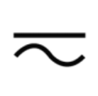 | IEC 417, No. 5033. Both direct and alternating current. |
| IEC 617-2 No. 02-02-06. Three-phase alternating current. | |
| IEC 417, No. 5017. Earth (ground) terminal. Primarily used for functional earth terminals which are generally associated with test and measurement circuits. These terminals are not for safety earthing purposes but provide an earth reference point. | |
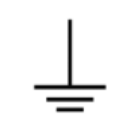 | IEC 417, No. 5019. Protective conductor terminal. This symbol is specifically reserved for the protective conductor terminal and no other. It is placed at the equipment earthing point and is mandatory for all grounded equipment. |
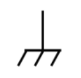 | IEC 417, No. 5020. Frame or chassis terminal. Used for points other than protective conductor and functional earth terminals where there is a connection to accessible conductive terminals to advise the user of a chassis connection. |
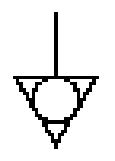 | IEC 417, No. 5021. Equipotentiality. Used in applications where it is important to indicate to the operator that two or more accessible functional earth terminals or points are equipotential. More for functional rather than for safety purposes. |
| IEC 417, No. 5007. On (Supply). Note that this symbol is a bar, normally applied in the vertical orientation. It is not the number 1. | |
| IEC 417, No. 5008. Off (Supply). Note that this symbol is a true circle. It is not the number 0 or the letter O. | |
| IEC 417, No. 5172. Equipment protected by double insulation or reinforced insulation (equivalent to Class II if IEC 60536). | |
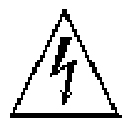 | ISO 3864, No. B.3.6. Background colour - yellow; symbol and outline - black. Caution, risk of electric shock. Generally used only for voltages in excess of 1000 V. It is permissible to use it to indicate lower voltages if an explanation is provided in the manual. Colour requirements do not apply to markings on equipment if the symbol is molded or engraved to a depth or raised height of 0.5 mm, or that the symbol and outline are contrasting in colour with the background. |
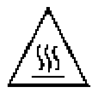 | IEC 417, No. 5041. Background colour - yellow; symbol and outline - black. Caution, hot surface. Colour requirements do not apply to markings on equipment if the symbol is moulded or engraved to a depth or raised height of 0.5 mm, or that the symbol and outline are contrasting in colour with the background. |
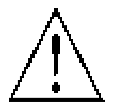 | ISO 3864, No. B.3.1. Background colour - yellow; symbol and outline - black. Caution (refer to accompanying documents) used to direct the user to the instruction manual where it is necessary to follow certain specified instructions where safety is involved. Colour requirements do not apply to markings on equipment if the symbol is moulded or engraved to a depth or raised height of 0.5 mm, or that the symbol and outline are contrasting in colour with the background. |
| IEC 417, No. 5268-a. In-position of bistable push control. | |
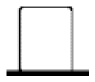 | IEC 417, No. 5269-a. Out-position of bistable push control. |
CAppendix C – COM Option
COM Overview
The COM Option for the 575 includes a GPIB and an Ethernet interface in addition to the RS232 and USB interfaces included with the standard product. The command set is the same for the RS-232, USB, GPIB, and Ethernet. Different interfaces may be used at the same time. Responses will be made to the most recently used interface.
GPIB Interface
Also known as IEEE-488, a GPIB computer interface is optional on the 575. Before using this interface, the address must be set using the GPIB address menu item.
Ethernet Interface
The Ethernet module used is a "Digi Connect ME" module supplied by Digi Connectware, Inc. There are several ways to successfully communicate with the pulse generator over Ethernet. The two most popular methods are raw TCP/IP (such as LabView or programming with VISA libraries) and by mapping a PC COM port using the Digi Connectware's "Realport Drivers".
IP Address and Raw TCP/IP Connection
This document describes one of the most popular methods of setting up Ethernet communication for the Berkeley Nucleonics pulse generators. The method discussed is Raw TCP/IP communication. The Ethernet module used is a "Digi Connect ME" device manufactured by Digi International, Inc. It supports virtually all practical Ethernet communication methods. A set of utilities and documentation by Digi is included on the CD shipped with the pulse generator. This discussion assumes that the Digi utilities and National Instruments VISA (version 3.3 in this procedure) are installed. The procedures discussed have been prepared using Windows XP service pack 2.
Determining IP Address
The Digi module has been reset to factory defaults before it left the manufacturing facility. In this mode, it is ready to be assigned an IP address by the local DHCP server. If a crossover cable is being used, the Ethernet device will assume a default IP address.
The Digi utility "Digi Device Discovery" can be used to determine the IP address that is currently assigned to the Ethernet module. Hit "Start, All Programs, Digi Connect, Digi Device Discovery". When the utility opens, it scans the LAN looking for Digi Ethernet modules. It may take a minute after plugging in or powering the Ethernet module before the LAN negotiates the connection with the Digi module. Hit "Refresh View" in the left column after a minute or so if the utility fails to see the unit when you start it. In some situations the Windows Firewall will block the Digi Device Discovery from being able to see the unit. It is advisable to turn the Windows Firewall off while performing these tasks. When the utility sees the Digi device, it will display it in the list (Figure 1).

From this point, a web interface can be opened, allowing access to configuration options for the Digi module. If you are required to enter a username and password, they are as follows: Username "root", Password "dbps".
If a static IP address is desired, this change can be made from the web interface. Please note, however, that if the IP address is changed such that it is incompatible with the LAN, all communication including access to the module's settings (including the IP address) will no longer be possible over the LAN. If this happens, a crossover cable must be used to access the Digi module's settings (again using Digi Device Discovery). Temporarily set the PC's IP address to be compatible with the Digi module's IP address to get the PC and pulse generator to 'see' each other over the crossover cable.
DAppendix D – DT15 (Dual Trigger Option)
DT15 Overview
This module option allows the "Gate" input to function as a second trigger input. For consistency, the enabling menu for this option is located under the "Trig" menu structure. Once the dual trigger mode is enabled, both the "Gate" and "Trig" inputs can act as trigger inputs.
Adjustments for the "Gate" trigger input are located under the "Gate" menu structure. The voltage threshold level and trigger edge for the "Gate" input can be adjusted from this menu. The "Gate" trigger edge choice is only available when in dual trigger mode.
Once dual trigger functionality is enabled on the unit, each channel can be assigned to either of the trigger inputs. The default trigger source for each channel is the "Trig" input. The trigger source selection is accessed in the secondary channel menus. To access this menu, first press the yellow "Func" button followed by the channel of interest. Continue to press "Func" then the channel button until the menu page with "Ch Gate:" and "TrigSrc:" appears. Use the "Next" button to place the cursor on the "TrigSrc" line and use the up/down arrows to change to the desired trigger source.
DT15 Menus
Trigger 1 Menu (TRIG key): Modes Disabled, Triggered (Threshold Level, Trigger Edge), Dual Trig* (Threshold Level, Trigger Edge). Enables the use of the TRIG input by the system timer as a trigger source.
- Mode: Selects between disabling/enabling the trigger mode(s).
- Level: Sets the trigger threshold.
- Edge: Selects between rising and falling edges as the trigger source when a trigger mode is enabled.
Trigger 2 Menu (GATE key)*: Modes Disabled, Triggered (Threshold Level, Trigger Edge), Dual Trig. *Only enabled when TRIG mode is set to "Dual Trig". Functions as Standard Gate Menu when not in "Dual Trig" mode.
DT15 SCPI Command Summary
| Keyword | Parameter | Comments |
|---|---|---|
:PULSe[0] | Subsystem. Contains commands to control the output pulse generation. Commands without suffix refer to the currently selected logical instrument. | |
:TRIGger | Subsystem. Contains commands to define the Trigger function. | |
:MODe | DUAL | Sets the unit into dual trigger mode. |
:PULSe [1 / 2 / n] | Subsystem. Valid suffix range depends on the number of channels (ChA = 1, ChB = 2, etc). | |
:CTRIGger | GATE / TRIG | Sets which input is assigned to the channel trigger. |
DT15 IEEE 488.2 Command Summary
| Keyword | Command Name | Comments |
|---|---|---|
*TTG | Trigger – Trigger Input | Generates a software trigger pulse for the TRIG input only. Operation is the same as receiving an external trigger pulse on the Trigger input. |
*GTG | Trigger – Gate Input | Generates a software trigger pulse for the GATE input only. Operation is the same as receiving an external trigger pulse on the Gate input. |
EAppendix E – AT35 (35V Output Option)
AT35 Description
When the Adjustable Mode is enabled for this module, the outputs will provide an adjustable output from 5 volts to 35 volts. The pulse width can be set over the standard range of the unit, but the 35 volt output will self limit to approximately 4 µs with some droop. There is no change to TTL output mode functionality with this module.
To maintain the highest possible rise time, care must be taken with cabling and termination. Low capacitance cable and 50 ohm termination will provide the fastest rise times without overshoot. Faster rise times can be achieved by increasing the termination resistance, but some overshoot is likely to occur. While the 35 volt output provides a fast, controlled rising edge, the pulse width and falling edge are not tightly controlled. Also, when using the 35V mode, the option will only function if the 'Polarity' is set for "Active High".
AT35 Specifications
| AT35 (through a 50 ohm load at 200 Hz) | Specification |
|---|---|
| Output | 5 V – 35 V |
| Setpoint Resolution | 10 mV |
| Rise Time | < 30 ns |
| Accuracy | 500 mV |
| Max. Frequency (Internal & External) | 4000 Hz |
FAppendix F – TZ50 (Impedance Matching Output Module)
TZ50 Overview
This module option allows a user to have a 50 Ohm load on the output while maintaining output amplitude of at least 4 Volts while in the TTL/CMOS mode. All other functionality of the module is the same as the AT20 modules, including output while using the Adjustable Mode Function of the channels.
TZ50 Specifications
| TZ50 | Specification |
|---|---|
| TTL/CMOS Mode | |
| Output Level | 4.0 V typ into 50 Ohms |
| Rise Time | 3 ns |
| Slew Rate | 0.5 V/ns |
| Jitter - Channel to Channel | 50 ps RMS |
| Adjustable Mode | |
| Output Resolution | 10 mV |
| Current | 100 mA typ, 400 mA max (short pulses) |
| Slew Rate | 0.1 V/ns |
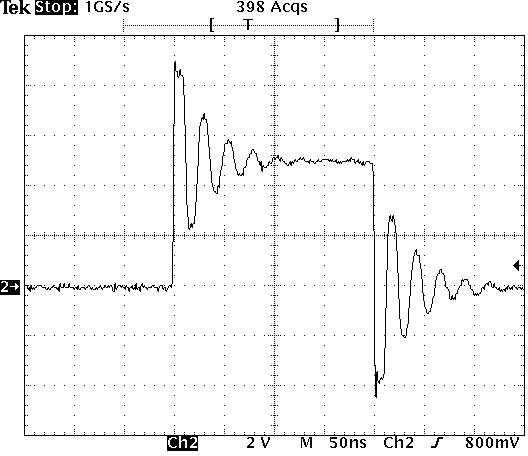
GAppendix G – Increment Modes Option
Increment Overview
The System Increment modes are a pair of special modes, which allow the delay and width of each channel to be incremented at the end of a burst of pulses. Each channel is independent and each may be set with different initial values and different values for the step size for both the delay and the pulse width.
There are two incrementing modes, Increment and DC Increment. In the Increment mode, each start command or external trigger produces a burst of pulses. At the end of the burst the appropriate delays and pulse widths are incremented and the instrument is armed for the next start command. In the DC Increment (Duty Cycle) mode the output is starting as with the normal duty cycle mode. At the end of each cycle the delays and pulse widths are incremented. This continues for the number of cycles defined by the Cycles parameter. The modes are selected from the system mode menu. The step sizes are specified in the channel menus.
Increment Menus
System Mode Menu 1 Extensions (FUNC + MODE key): MODE BurstIncr (#/Burst) and MODE DCIncrement (#/On, #/Off). System Mode Menu 2 Extensions: MODE BurstIncr (T0 Period) and MODE DCIncrement (Cycles, T0 Period).
- Mode: Selects the T0 mode: Continuous, Single Shot, Burst or Duty Cycle mode.
- Burst: Sets the number of pulses to be generated when in Burst mode.
- On: Sets the number of pulses to be generated during each on cycle.
- Off: Sets the number of pulses to skip during each off cycle when in the Duty Cycle mode.
- Cycles: Sets the number of DC Increment Cycles to generate before completion.
- To: Sets the T0 period which determines the fundamental output frequency of the unit.
Advanced Channel Menu Increment Extension (FUNC + channel key): Channel Enable, Increment Wid, Increment Dly.
- IncW: Sets the channel pulse width increment.
- IncD: Sets the channel delay increment until the active edge.
Increment SCPI Command Summary
| Keyword | Parameter | Comments |
|---|---|---|
:PULSe[0] | Subsystem. Contains commands to control the output pulse generation. Commands without suffix refer to the currently selected logical instrument. | |
:MODe | BINCRement / DINCRement | Sets the T0 mode. Added parameters for Burst Increment and Duty Cycle Increment mode. |
:CYCLe | <numeric value> | Sets the number of cycles to generate in Duty Cycle Increment mode. |
:IRESet | 1 | Resets the width and delay increment parameters on all channels. |
:PULSe [1 / 2 / n] | Subsystem. Valid suffix range depends on the number of channels (ChA-1, ChB-2, etc). | |
:IWIDth | <numeric value> | Sets the pulse width increment step size. |
:IDELay | <numeric value> | Sets the delay increment step size. |
Increment Initialization and Reset (FUNC + CLR)
Pressing the FUNC key then CLR initializes the increment parameters and resets the delays and pulse widths to their initial conditions. This must be done after setting all the step parameters, but before generating any pulses.
Increment Specifications
| Increment | Specification |
|---|---|
| Width Step Size | -1.00 s to 1.00 s |
| Width Minimum Step | 10 ns (-10 ns) |
| Width Step Resolution | 250 ps |
| Width Incremented Range | 10,000 s |
| Delay Step Size | -100 ms to 100 ms |
| Delay Minimum Step | 10 ns (-10 ns) |
| Delay Step Resolution | 250 ps |
| Delay Incremented Range | 10,000 s |
| Update Rate | 10 µs + 30 µs per active channel (1 Ch @ 25 kHz to 8 Ch @ 4 kHz) |
HAppendix H – AT45 Option (45 Volt Output)
AT45 Option Overview
For channels with AT45 output option, the maximum frequency is limited to 100 kHz. The pulse width can be set over the standard range of the unit with both active high and low outputs when set to high impedance mode. In low impedance mode, the pulse width is limited to a maximum of 10s and the active high output is no longer allowed. To maintain the highest possible rise time, care must be taken with cabling and termination. Low capacitance cable and 50 ohm termination will provide the fastest rise times without overshoot. The channel menu structure for the AT45 module changes are described in the table below (changes from standard outputs are in bold italics).
AT45 Protection Error Messages
When an AT45 module is present, the system performs self-checks to insure the module is not damaged when attempting to over-drive.
Module Errors
If a channel on any AT45 module is over-driven, the channel will disable itself and the system will indicate an error on the module. The error will not clear until the user presses FUNC - PERIOD key sequence to clear the error, or power cycles the instrument.
System Limit Error
The system will not allow the Lo Impedance enabled AT45 channels to exceed 150V total amplitude. If this situation occurs, the "Over-Driving Unit" error is displayed and the currently adjusting amplitude is reduced to the 150V enabled system limit.
Voltage Change Timing
The channels adjustable voltage changes very quickly when adjusting from a lower voltage to a higher voltage but changes slowly when changing from a higher voltage to a lower voltage. It takes approximately 30s to change from 45V to 3.0V so caution must be taken when adjusting the voltage to a lower voltage tolerant circuit.
AT45 Channel Menus
Channel Output Configuration Menu: Channel Enable; Output Type (High Z, Low Z); Polarity (High Z only); Output Level.
AT45 SCPI Command Extension Summary
| Keyword | Parameter | Comments |
|---|---|---|
:PULSe [1 / 2 / n] | Subsystem. Contains commands to control the output pulse generation. Valid suffix range depends on the number of channels (ChA = 1, ChB = 2, etc). | |
:OUTPut | Subsystem. Contains command to control output mode. | |
:MODe | HIZ / LOZ | Selects output Amplitude mode: High Impedance or Low Impedance. |
:AMP | 4 V – 45 V | Sets adjustable output level. |
:MERRor | 1 | Command clears the last module error to allow the unit to generate pulses again. Query returns the last displayed error. |
AT45 Specifications
| AT45 | Specification |
|---|---|
| Amplitude | 4 V – 45 V |
| Resolution | 20 mV |
| Accuracy | +/-1.5% |
| Rise Time | < 2 ns Typical 10%-90% (Low Z); < 9 ns Typical 10%-90% (High Z) |
| Fall Time | < 9 ns Typical 90%-10% (Low Z); < 7 ns Typical 90%-10% (High Z) |
| Frequency (Internal & External) | DC – 100 kHz |
| Overshoot | < 35% Typical Allowed for Fast Rise Time |
| Polarity - High Z (>10k) | Active High or Active Low |
| Polarity - Low Z (50 Ohms) | Active High Only |
| Pulse Width - High Z (>10k) | 10 ns to DC |
| Pulse Width - Low Z (50 Ohms) | 10 ns to 10 s |
| Current (maximum) | 35 mA (High Z @ 10 ms width); 900 mA (Low Z @ 10 ms width) |
The following oscilloscope captures show the AT45 output behavior. Rise time and overshoot are tuned for best response at low impedance (low Z).


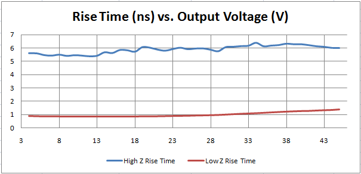

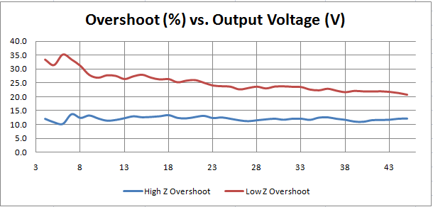